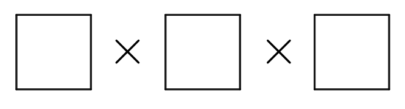

Problem
Khushali selects three different numbers from the set \(\{-7,-5,-3,-1,0,2,4,6,8\}\). She then finds the product of the three chosen numbers. What is the largest product that Khushali can make?

Solution
Since \(4 \times 6 \times 8 = 192\), then the greatest possible product is at least 192. In particular, the greatest possible product is positive.
For the product of three numbers to be positive, either all three numbers are positive or one number is positive and two numbers are negative. (If there were an odd number of negative factors, the product would be negative.)
If all three numbers are positive, the product is as large as possible when the three numbers are each as large as possible. In this case, the greatest possible product is \(4 \times 6 \times 8 = 192\).
If one number is positive and two numbers are negative, their product is as large as possible if the positive number is as large as possible (8) and the product of the two negative numbers is as large as possible.
The product of the two negative numbers will be as large as possible when the negative numbers are each “as negative as possible” (that is, as far from 0 as possible). These numbers are thus \(-5\) and \(-7\) with product \((-5) \times (-7) = 35\). (We can check the other possible products of two negative numbers and see that none is as large.)
So the greatest possible product in this case is \(8 \times (-5) \times (-7) = 8 \times 35 = 280\).
Combining the two cases, we see that the greatest possible product is 280.